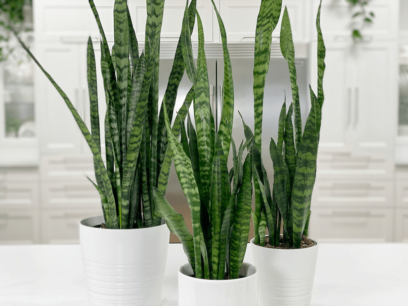
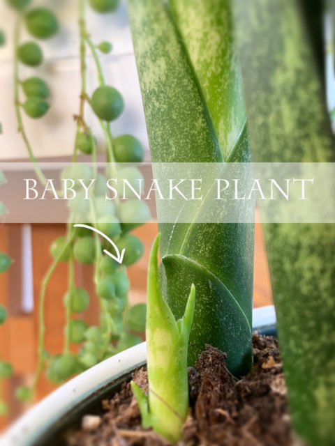
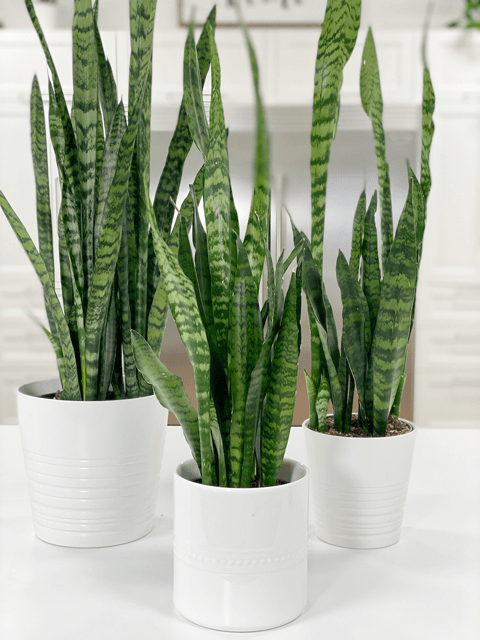
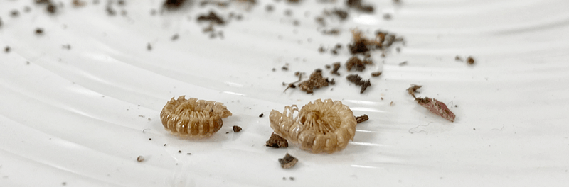

Snake Plant | Sansevieria Black Coral | Care Difficulty – Easy
The Sansevieria Black Coral is one of my favorites when it comes to snake plants. I love the shade of green it has, along with the subtle horizontal striping on each blade. The tall leaves (blades) are posture-perfect, standing tall and defining vertical spaces. If you love to decorate with plants, these are an interior designer’s dream plant. If you are one that doesn’t favor them due to their strong, bold look, tough, and pointed leaves… try adding some pothos plants around them to help soften their appearance. The contrast will create a wonderful plant vignette.

The Sansevieria Black Coral is just one of many snake plants. You can find them tall or short, with round, flat or concave leaves, and variegated with dark green, silver, light green, yellow, chartreuse, or white. Pick your favorite and run with it! I have about ten of these plants all around the house. Each one has unique markings and varies in size. My largest one is to the point where I can’t move it by myself! It is over ten years old. With a healthy environment, their leaves can reach up to 35″ inches long and 2.5″ inches wide.
Much to my delight, these plants can grace us with long flower spikes (which mine did). The flower stalk grows as tall as 3’ feet high and is covered in small, honeysuckle-like greenish, cream, or white flowers. They typically appear on mature plants, arising from the base of the spear-shaped leaves. The blossoms are richly fragrant and contain very sweet, sticky nectar, which appears as dew drops on the blossom stems. The blossoms close during the daytime and open after dark. And here’s another amazing thing… the blossoms transition into orange berries. Below are a couple of photos of the flowers that are currently on my more mature plant that stands about 5′ tall. So far, I have counted 5 flowers on the one plant.
Decorating with Snake Plants
- For a jungle, lush look, select spaces that can handle a plant with height, then add in lower bushy plants around it. Groups of three are a good rule to use.
- These plants are great for desks and countertops that can’t handle a sprawling plant.
- Group in threes with matching pots to create a clean, minimalistic look.
- If you want to make a statement, group all your snake plants in a setting–all varieties welcome!

Water Requirements
Easy does it with the watering. You want to be careful not to overdo it, because your plant will rot out. Always make sure the soil is almost completely dry before thoroughly watering again. Size and location depending, you will end up watering your snake plants every 2-6 weeks. If you travel or tend to ignore plants, this is the one for you. But don’t ignore them TOO long; nobody really likes to be ignored, whether human or plant.
Light Requirements
Even though Sansevierias prefer medium light, they’ll also tolerate low light and high light. The main thing you need to watch for is DIRECT sunlight. No houseplant does well in those conditions, because the leaves can burn. So, as you can see, this plant gives you many placement options.
Temperature Requirements
Sansevierias will tolerate a wide range of temperatures in our homes. They can hang out in temperatures ranging between 55 – 85 degrees (F). Temperatures below 55 degrees (F) can cause them harm.
Fertilizer (plant food)
Fertilizer isn’t necessary but may encourage brighter colors and faster growth. You can feed the plant once a month spring through fall with a diluted fertilizer that is specially made for succulents. Skip feeding during winters when the growth is slow.
Plant Characteristics to Watch For
Diagnosing what is going wrong with your plant is going to take a little detective work, but even more patience! First of all, don’t panic and don’t throw out a plant prematurely. Take a few deep breaths and work down the list of possible issues. Below, I am going to share some typical symptoms that can arise. When I start to spot troubling signs on a plant, I take it into a room with good lighting, pull out my magnifiers, and begin by thoroughly inspecting the plant.
My plant isn’t growing
- If you bought it during the fall and winter months, it’s entirely natural for growth to slow down. These are the dormant months that new growth is either completely stopped or extremely slow. However, if you are in the spring and summer months and it’s still not growing, revisit the care that it requires and see if you are up to speed on that.
- Solution: If the plant is receiving adequate water, try moving it to a sunnier location. Even though they do well in low light conditions, they will thrive with more light.

Brown tips
- Brown tips can mean a problem with overwatering.
- Solution: Cut back and allow the soil to dry almost completely in between waterings.
The blades are mushy
- Mushy leaves (blades) can be a sign of root rot.
- Solution: Water less, and repot into fresh soil to allow the roots to dry out. You may also need to cut off any mushy leaves.
The blades are drooping or wrinkling
- Unlike most plants, the leaves of a snake plant actually droop when they’ve gotten too much water, not too little! But if the blades have a wrinkled appearance or start to bend, it’s a surefire sign that your plant isn’t getting enough water.
- Solution: Home in on the water requirements. I let my snake plants dry out, then I water them in the sink, saturating the soil until it comes of our the drain holes.
Common Bugs to Watch For
If you want to have healthy house plants, you MUST inspect them regularly. Every time I water a plant, I give it a quick look-over. Bugs/insects feeding on your plants reduces the plant sap and redirects nutrients from leaves. Snake plants are highly pest-resistant, but in poor conditions, they can get mealybugs and/or spider mites. The biggest threat is fungal growth due to root rot. If the plant receives too much water or grows in soil with poor drainage, the fungus may start to appear near the base of the plant.
I came across one instance where I had little worm-like bugs at the bottom of the cover pot. These creatures made their way through the soil and out one of the drain holes. In this case, I made up a hydrogen peroxide solution and poured it through the soil, making sure to saturate it. You can read about it (here).

- Mealybugs look like small balls of cotton. They can travel slowly, but they have a strong will and determination! Though they are slow-moving, if any plant is touching another, there is a chance the mealybug will hitch a ride on a new leaf and spread. They breed like rabbits of the insect world. Females can deposit around 600 eggs in loose cottony masses, often on the underside of leaves or along stems.
- Spider mites are more common on houseplants. They are not insects – they are related to spiders. These appear to be tiny black or red moving dots. Spider mites are nearly invisible to the naked eye. You often need a magnifying lens to spot them, or you may notice a reddish film across the bottom of the leaves, some webbing, or even some leaf damage, which usually results in reddish-brown spots on the leaf.
Toxicity
While the toxicity levels are low, it’s safest to keep pets away from your plant. It can cause excessive salivation, pain, nausea, vomiting, and diarrhea.
© AmieSue.com